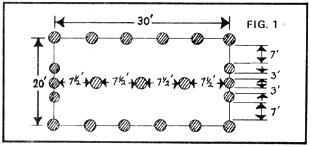

How five manually illiterate individuals constructed a snug Maine cabin in three months and for only $400!
The building of a house, barn, or garage strikes most people as a formidable task reserved only for professionals (or at least experienced weekend handymen). We were no exception . . . and when our group began to construct a house in September, it was with mixed feelings of uncertainty and youthful exuberance. For five more or less manually illiterate individuals to attempt to fabricate a year-round dwelling in the western "mountains" of Maine seemed preposterous (though, at the same time, somehow natural). Yet, three months later-as I sit at this desk and look out through double-paned windows at the cold, snowy landscape-I remember the job as rather simple. ("Uncomplicated", I mean . . . not "quick and easy"!)
Our intention was to build a survival shelter-one which could serve as a house for a year or two and as a woodshed and workshop for many years after-and I think we succeeded pretty well. The fruit of our efforts is a 20' X 30' building with two 8' X 15' lofts upstairs, separated by a storage area that measures nearly 15' X 20'. That's space enough for two couples and most of their necessary possessions.
No, the house isn't the Ritz or the Waldorf-Astoria, but it certainly is adequate protection against even our demanding central Maine climate. The dwelling didn't take us long to erect, either. The first post went into the ground September 5, and we moved out of our tents and into the lofts on October 16 . . . a total of six weeks. We didn't buy a stick of lumber, and the whole shebang cost less than $400 to put up.
Work actually commenced in July, when two people began cutting balsam firs for framing and walls. Within six weeks we'd felled, peeled, and hauled to our building site approximately 175 poles that averaged 5 inches in diameter and 20 feet in length.
Meanwhile, three more of us were busy scrounging and salvaging lumber, windows, and other building materials from Portland, 70 miles away. The booty included over 600 feet of 2 X 4's, three large sheets of metal roofing, eight sheets of 1/4-inch plywood, a few 8 X 10 beams, 10 doors, and about 25 windows. The bulk of the wood came from a building that was being remodeled . . . and not only was the lumber free, but our crew got paid for tearing it down and carting it away After countless trips to and from Portland in two pickups and a van, we had almost everything we needed. By the first of September, it wad time to start construction.
Our first step was to hand-dig holes 4 to 5 feet deep for tile posts (all of which were treated several times with flowing coats of Pentapreservative to keep them from rotting in the ground). We laid out the locations for our house supports as shown in Fig. 1, with the holes along the long walls spaced about six feet apart. (A few buried boulders that a four-wheel-drive jeep wouldn't budge caused us to place some of the uprights closer together or farther apart.) On the ends of the building the poles were set almost 7 feet in from each corner, and a line of five uprights, spaced 7-1/2. feet apart, was added down the middle. These and the posts of the side walls would of hold up the roof.
We installed the largest fir trunks we had-most of them 6 inches in diameter at the small end-plus two center uprights of milled lumber (one 6 X 8, the other 6 X 10) in the above holes. All were set with a plumb line, as nearly perpendicular as possible. If the whole batch of uprights had been lumberyard stock we could have done the job more quickly and easily with the help of a 6-foot level . . . but small curves in the fir trunks made this impossible, and a certain amount of estimating went into getting the supports straight.
Next came the plates (horizontal pieces on top of the uprights which support the rafters). We chose milled lumber for this purpose, on the theory that it would be easier to notch the roof beams to fit their rectangular surfaces.
Plates for the long walls were made of 2 X 4's and 2 X 6's, nailed together as shown in Fig. 2 to provide a seat for the joists. The end walls were topped with doubled 2 X 6's. This type of construction meant a number of splices in each beam (how many 30-foot-long 2 X 6's have you ever seen?) and we took care to make the joints fall directly above vertical poles. The plates were nailed together on the ground, then lifted onto the uprights and toenailed in place.
Next came joists, the horizontal timbers which reach from one long wall to the other. These provide support for a second floor, and-more important-hold the walls together when the weight of snow on the roof tends to force them apart. Since most of our milled lumber was under 10 feet long, we substituted poles placed 3 or 4 feet apart. Every 5 feet we installed a set of "lockers" . . . timbers which are notched into each plate and into each other (Fig. 3). This strengthening system more or less assures that the walls will stay in place unless the joists literally break in two.
Then the fun started: We began work on the roof. The first step was to install a massive ridge board (more than 4 X 6, and probably much larger than it really needed to be). This was done by running uprights to ridge level from the center plate (directly above the posts set in the ground), cutting 2 X 5's to match the distances between supports, and splicing them on each side with 2 X 4's the entire length of the house.
|
|
 |
|
|
|
|
|